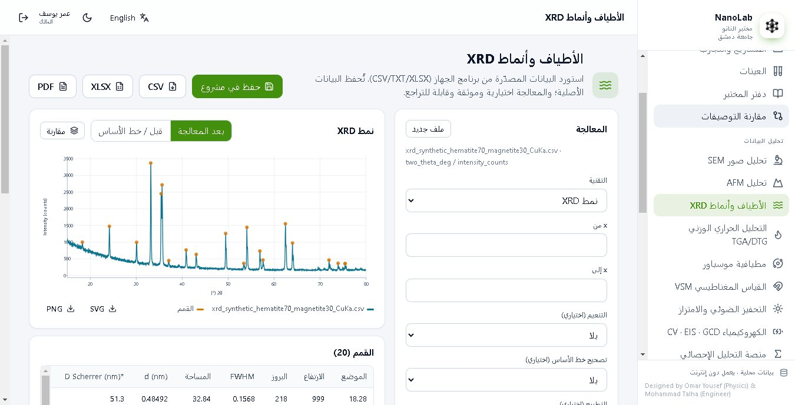
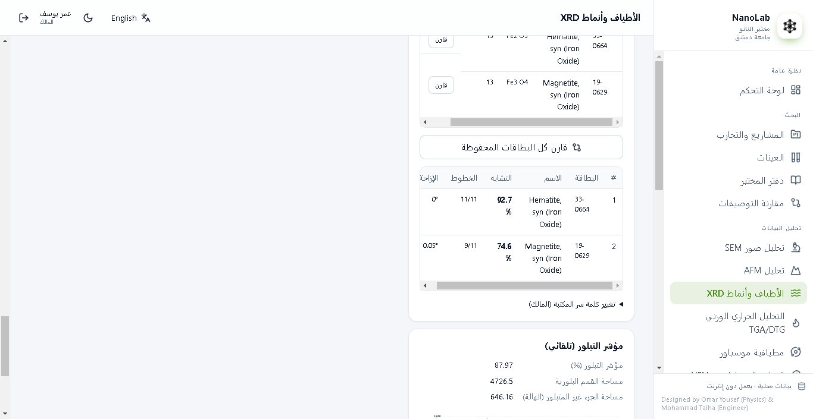
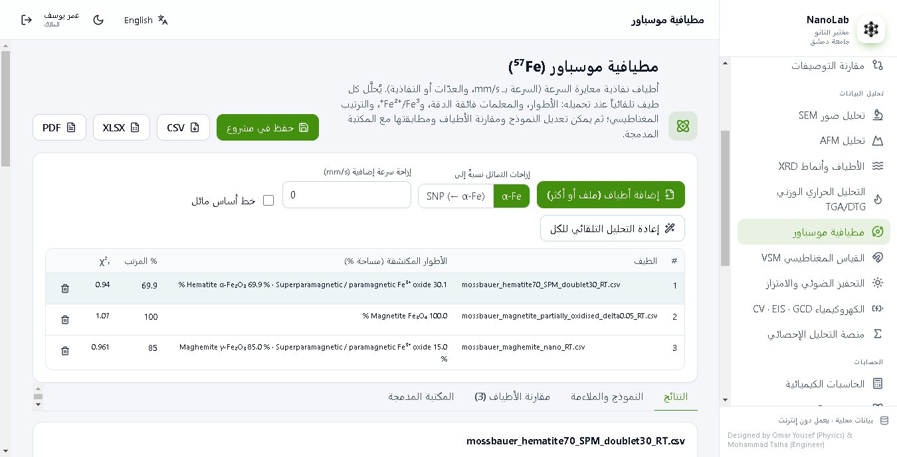
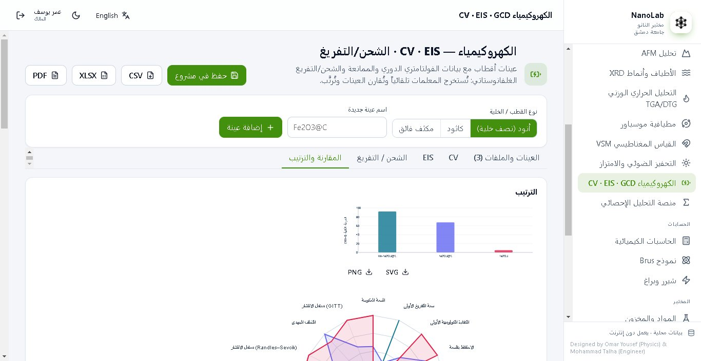
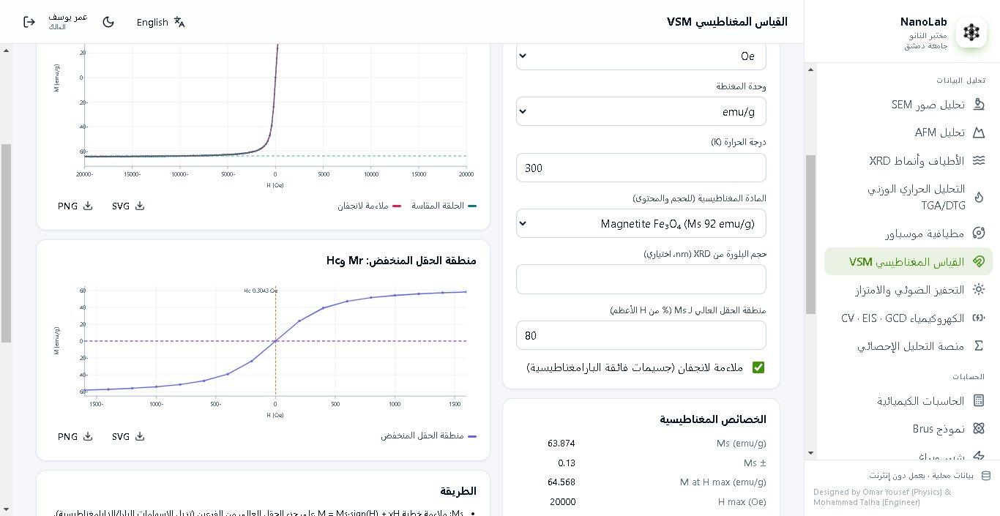
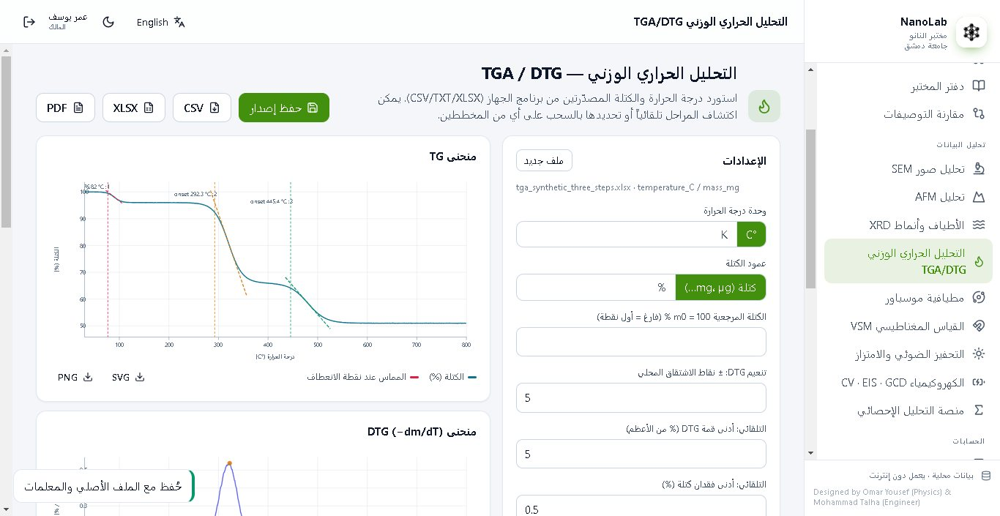
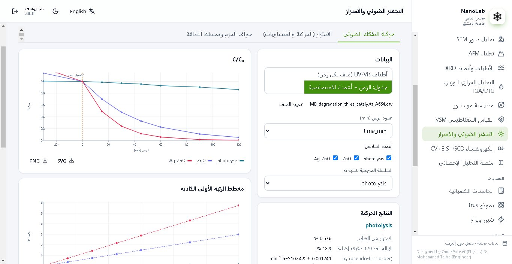
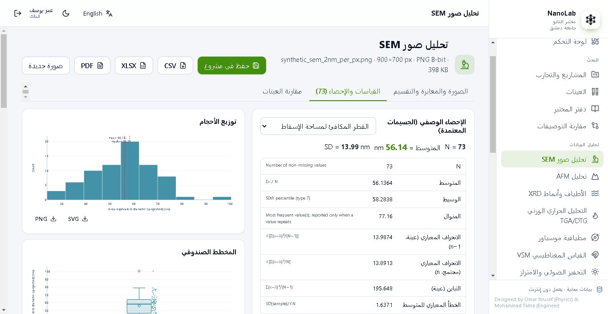

NanoLab
من بيانات الجهاز الخام إلى نتائج جاهزة للنشر: تحليل تلقائي موثّق بالمراجع لأطياف وأنماط المواد النانوية، مع إدارة المشاريع والعينات والمختبر.From raw instrument data to publication-ready results: automatic, referenced analysis of nanomaterials spectra and patterns, with project, sample and laboratory management.
تسعة مجالات في منصة واحدةNine domains, one workflow
حيود الأشعة السينيةX-ray diffraction
التعرف على الأطوار، مقارنة بطاقات مرجعية ملصوقة بنسبة تشابه، ويليامسون–هول، ثوابت الشبكة ومؤشر التبلور.Phase identification, pasted reference cards with a similarity score, Williamson–Hall, lattice parameters and crystallinity.
مطيافية موسباورMössbauer spectroscopy
تحليل تلقائي للأطوار والمعلمات فائقة الدقة وFe²⁺/Fe³⁺، مع مكتبة موثّقة لأكاسيد الحديد.Automatic phases, hyperfine parameters and Fe²⁺/Fe³⁺, with a referenced iron-oxide library.
المطيافيات الضوئيةOptical spectroscopy
فجوة الطاقة بطريقة Tauc وKubelka–Munk، طاقة Urbach، البلازمون، وإسناد نطاقات FTIR.Tauc and Kubelka–Munk band gaps, Urbach energy, plasmons and FTIR band assignment.
المغناطيسية والتحليل الحراريMagnetism & thermal
Ms وMr وHc وملاءمة لانجفان، ومراحل التفكك وبداياتها وقمم DTG.Ms, Mr, Hc and Langevin fits; decomposition steps, onsets and DTG peaks.
المجهريةMicroscopy
توزيع أحجام الجسيمات بالمعايرة، وخشونة السطح والمقاطع.Calibrated particle-size distributions, surface roughness and profiles.
الكيمياء الكهربائيةElectrochemistry
قيمة b وطريقة Dunn، ملاءمة الممانعة وDRT، السعة والكفاءة والاحتفاظ وGITT، وترتيب الأقطاب تلقائياً.b-value and Dunn method, impedance fitting and DRT, capacity, efficiency, retention and GITT, with automatic electrode ranking.
التحفيز الضوئي والامتزازPhotocatalysis & adsorption
حركية التفكك، نماذج الامتزاز ومتساوياته، ومخطط حواف الحزم.Degradation kinetics, adsorption models and isotherms, band-edge diagrams.
الإحصاء والحاسباتStatistics & calculators
منصة إحصائية وحاسبات كيميائية ونموذج Brus ومعادلة شيرر.Statistics workbench, chemistry calculators, Brus model and Scherrer.
إدارة المختبرLaboratory management
مشاريع وعينات ودفتر مختبر بإصدارات، مواد وأجهزة وحضور، وأدوار مستخدمين.Projects, samples and a versioned notebook; chemicals, instruments, attendance and user roles.
صور من البرنامجScreenshots








كيف تحصل على NanoLabHow to get NanoLab
- نزّل برنامج التثبيت من الزر في هذه الصفحة.Download the installer with the button on this page.
- تواصل معي للحصول على الرقم التسلسلي الذي يطلبه برنامج التثبيت.Contact me for the serial number the installer asks for.
- عند أول تشغيل يظهر «رمز الجهاز»؛ أرسله لي لأرسل لك كود التفعيل.On first start NanoLab shows a device code; send it to me and you receive the unlock code.
- الصق كود التفعيل في البرنامج واضغط «تفعيل».Paste the unlock code into NanoLab and press “Activate”.